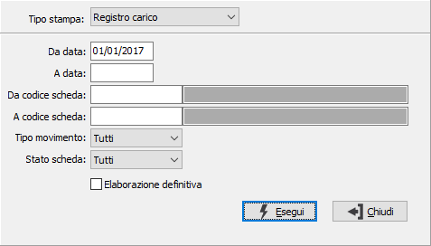

Stampa registro margine
Nella gestione del margine globale devono essere stampati due registri separati, uno per gli acquisti e le spese e uno per le cessioni, su tale registro in esame va annotato anche l’ammontare del margine globale positivo, evidenziatosi nel periodo di riferimento, distinto per aliquote. Per chi adotta la gestione del margine analitico, deve essere stampato un registro di carico e scarico in cui annotare gli acquisti e le cessione dei beni in esame. In considerazione di quanto esposto il valore del campo "Tipo Stampa" cambia in base alla configurazione attiva e potrà assumere i seguenti valori: Registro carico (margine globale), Registro scarico (margine globale), Registro carico/scarico (margine analitico o margine globale).

In base a quanto configurato nel campo “Tipo movimento” è possibile stampare:
per il registro di carico: tutti i movimenti, solo i movimenti di acquisto, storno acquisto o di riparazione;
per il registro di scarico: tutti i movimenti, solo i movimenti di vendita parziale, vendita totale o di storno vendita;
per il registro di carico/scarico: tutti i movimenti, solo i movimenti di acquisto, di storno acquisto, di riparazione, di vendita totale o di storno vendita.
Sullo “Stato scheda” è possibile impostare se devono essere stampate tutte le schede, solo quelle in carico o solo quelle cedute.
In caso di elaborazione definitiva i due campi precedenti vengono impostati a “Tutti” e non sono modificabili.